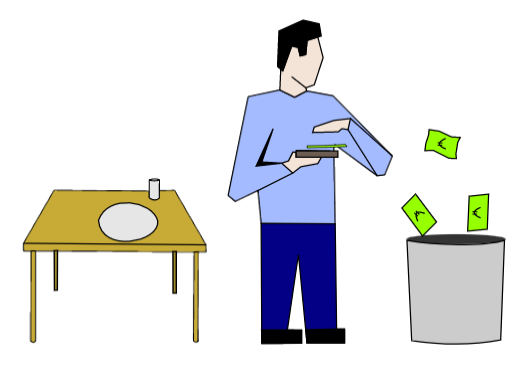

<div class="container">
		
    <div class="text-center">
          <h1 class="text-center" style="margin-top:30px"><u>Welcome to Grocery Budget App</u></h1>
                <h3><u>The app that tracks the amount of money you are wasting on expired food</u></h3>
                <h5>You simply add your shopping items with their expiration dates using the add item button.<br>
                If you dont eat the food item, click the waste button and it will be added to a backlog of wasted food items.<br>
                You will be able to monitor how much money you are wasting on discarded food throughout the year.<br>
                Just create a free account and login to get started.</h5>    
                   
             </div> 
        </div>
        
